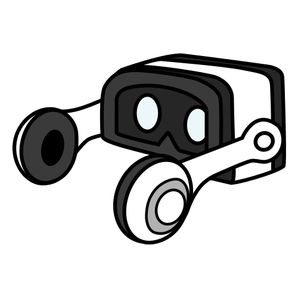

🥽 VR segura · 🧩 PIE · 🧠 Sala SEM2 · 🌈 Neurodiversidad
Centro VR inclusivo para estudiantes, familias y docentes
Este sitio reúne protocolos, fichas y apoyos visuales para que el uso de Oculus / Meta Quest sea una experiencia educativa, segura y amorosa. Aquí encontrarás cómo colocar bien el visor, entender los controles, preparar a las familias y acompañar a tus estudiantes desde el PIE y la Sala SEM2.
Modo VR guiado